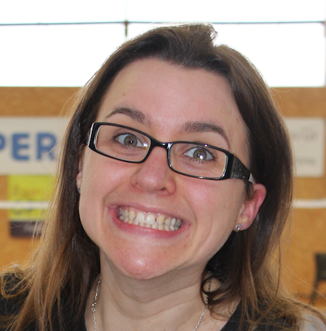
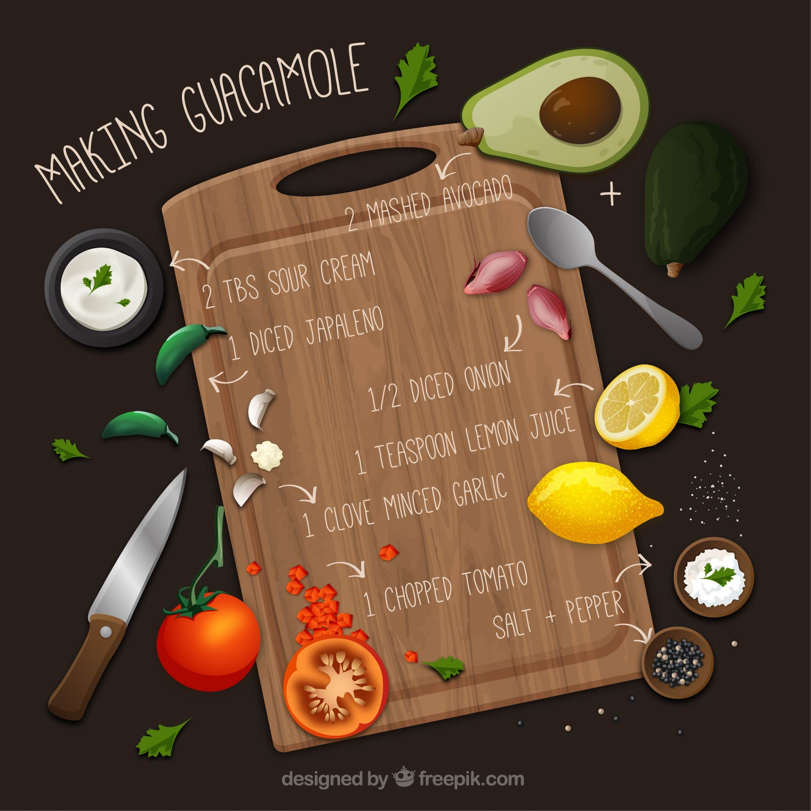

Cyrielle LEMEUNIER
FullStack Developper
Après une formation d'ingénieure de recherche en biologie cellulaire, quelques années comme gestionnaire familiale, j'ai erré 26 mois dans les télécoms. Mon nouvel horizon professionnel : le dev' ! Pour ça, petit tour au bootcamp Le Wagon.
Visite Le WagonMes centres intérêts

|
Le badmintonDepuis 10 ans, je n'ai eu de cesse de m'investir dans ce sport. Objectif personnel : continuer d'élever mon niveau de jeu pour aller chatouiller les meilleurs joueurs régionaux. |
|  |
La cuisineGourmande de nature, j'ai découvert la cuisine à 15 ans. Ouverte à de nouvelles saveurs, je cuisine sans prétention pour ma famille et mes amis. |